Descripción
Isaac es el personaje principal de The Binding of Isaac.
Es el único personaje desbloqueado por defecto. Es un niño que vive con su madre, quien lo encierra en su
habitación y le prohíbe salir. Un día, su madre escucha una voz que le dice que debe sacrificar a Isaac para
demostrar su fe. Isaac escapa al sótano y se enfrenta a monstruos y jefes en su camino.
Isaac comienza con 3 corazónes rojos y una bomba 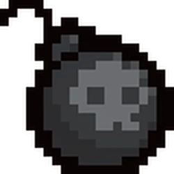. También comenzara con el D6 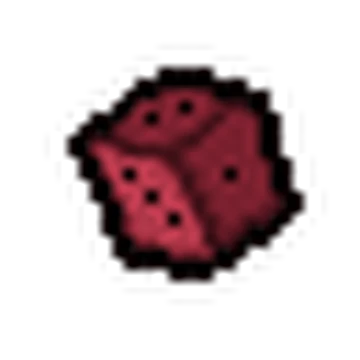una vez lo hayas desbloqueado.
Logros desbloqueables
Isaac tiene varios logros que se pueden desbloquear al completar ciertas tareas en el juego. Algunos de estos logros son:
 Isaac's Head - Completa Boss Rush
Isaac's Head - Completa Boss Rush
- 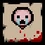Lost Baby - Derrota a Mom's Heart en modo difícil
 Isaac's Tears - Derrota a Isaac
Isaac's Tears - Derrota a Isaac
 Mom's Knife - Derrota a Satan
Mom's Knife - Derrota a Satan- 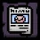Missing Poster - Derrota a The Lamb
- 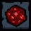The D20 - Derrota a ???
 Lil' Chest - Derrota a Ultra Greed
Lil' Chest - Derrota a Ultra Greed- 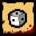D1 - Derrota a Ultra Greedier
- Fart Baby - Derrota a Hush
- 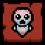Cry Baby - Derrota a Mega Satan
- D infinity - Derrota a Delirium
- 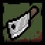Meat Cleaver - Derrota a Mother
- 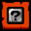Options? - Derrota a The Beast
- 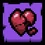The Broken - Usa la Red Key para abrir el cuarto oculto en Casa
- 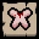Buddy Baby - Completa todas las marcas en modo dificil
Trivia
Isaac es un personaje que ha sido objeto de muchas teorías y especulaciones por parte de los fanáticos. Algunas curiosidades sobre él son:
- Isaac hace referencia a la historia bíblica de la unión de Isaac, en la que Dios le ordenó a Abraham sacrificar a su único hijo, Isaac, para demostrar su lealtad y amor. "Entonces Dios le dijo: 'Toma a tu hijo, tu único hijo, a quien amas, Isaac, y ve a la región de Moriah. Sacrifícalo allí como holocausto en el monte que yo te mostraré'" (Génesis 22:2).
- Edmund ha declarado que Isaac es zurdo, pero en la escena inicial, Isaac sostiene un lápiz con la mano derecha. Esto podría ser una referencia al prejuicio católico contra la zurdera, derivado de Mateo 25:33, que proclama que Dios pondrá a los que merecen ascender al Cielo a su derecha y a los que merecen descender al Infierno a su izquierda. La madre de Isaac podría haberlo obligado a trabajar con la mano derecha. La práctica general de obligar a los zurdos a usar la mano derecha también ha sido una práctica desde hace mucho tiempo, y la aceptación de los zurdos solo comenzó a notarse en 1971.
- Isaac es calvo porque su mamá lo rapo
- El nombre completo de Isaac es Isaac Moriah, el lugar donde Abraham toma a su hijo Isaac para sacrificarlo, en el Libro de Genesis
Isaac

Estadísticas
Salud: 3 corazones
Velocidad: 1.00
Daño: 3.50
Lágrimas: 2.73
Notas
- Personaje inicial del juego.
- Desbloquea personajes al avanzar
Objeto Inicial
The D6 (desbloqueable)